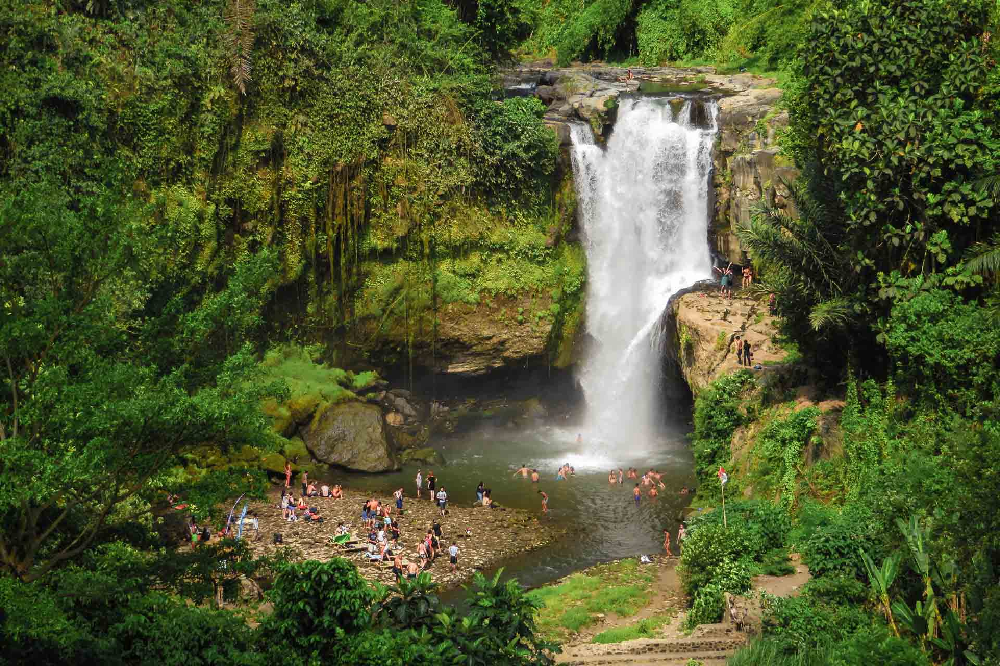
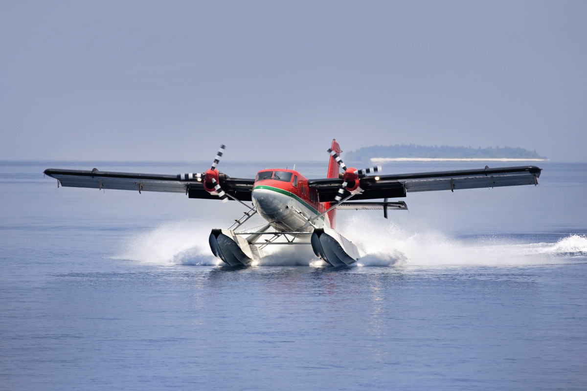

Bali
Bali is one of the most famous islands in Indonesia and a popular travel destination known for its beaches, temples, forests, and vibrant culture. It attracts millions of visitors every year who come to relax and explore its natural beauty.
Geography
Bali is located in Southeast Asia and is surrounded by beautiful coastlines, rice terraces, mountains, and tropical forests. The island has a warm climate that makes it perfect for tourism throughout the year.
Culture
Bali is known for its rich traditions, temples, festivals, and arts. Balinese dance, music, and handicrafts are important parts of the local culture. The island has a strong spiritual atmosphere and many historic temples.
Tourism
Tourism is the main industry in Bali. Visitors enjoy beaches, water sports, cultural experiences, and nature activities. Many travelers also visit Bali for relaxation and wellness retreats.
Famous Places
Popular places to visit in Bali include Ubud, Kuta Beach, Tanah Lot Temple, Seminyak, and Mount Batur. These attractions offer beautiful scenery and cultural experiences.
Gallery




Bali
| Country | Indonesia |
| Region | Southeast Asia |
| Capital | Denpasar |
| Population | 4.3 Million+ |
| Famous For | Beaches, Temples, Culture |
| Best Time to Visit | April to October |